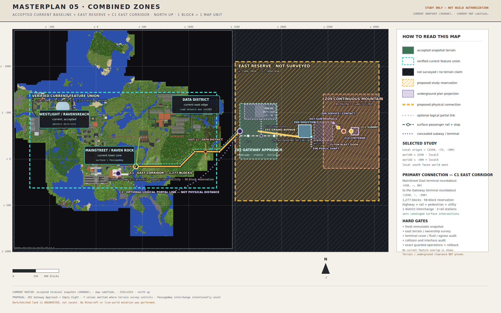

Placing the Combined Complex into the accepted current world — and connecting it with the East Corridor, a single reservation carrying highway, railway, footway and utilities.
Build ID: 05-combined-zones
Status: SITING STUDY — NOT AUTHORIZED FOR WORLD EDITS · Date: 2026-08-03
Scale: 1 block = 1 metre · vanilla Y=-64…319, stock Paper
East reserve: x 1500…3050 · z -1050…450 · Corridor: 1,277 blocks
Accepted baseline: 1,215 catalog records · snapshot c39d0d67…

The accepted terminal snapshot as the base, with the proposed east reserve and the C1 East Corridor overlaid. Dark hatched land is unsurveyed, not vacant.
"A plan is not a permission. Every coordinate here is a coherent planning transform until a fresh survey says otherwise."
05 — Combined Zones · Integration Study
Navigation
Table of Contents
Click any entry to jump to that section · Current-World Integration Study
One world, one reserve, one corridor that makes it real
Masterplan 05 places the Combined Complex — Cheyenne Mountain, SubTropolis and the Houston Tunnel System, integrated in Masterplan 04 — into the accepted current world rather than at an authored origin. It reserves an east-side study envelope beyond the current build, adapts the vertical design to the vanilla height envelope, and connects the whole thing to the existing map with a single multimodal corridor.
The connection is the substance of this revision. What was previously a 267-block stub — whose current-world endpoint was a road-network bounding-box edge rather than a surveyed door — is now the East Corridor: 1,277 blocks from a terminal roundabout east of MainStreet America to the Gateway, carrying a four-lane divided highway, a double-track passenger railway, a protected pedestrian route and a utility reserve inside one 56-block reservation.
Fig. 3.1 — The East Corridor. Alignment swinging south of the Data District, the single service interchange, both terminal roundabouts, and the 56-block cross-section with the railway on the north flank.
The seven binding decisions
Placement
East reserve, rotated 90°
x 1500…3050, z -1050…450. Current cataloged features end at x=1300. The plan is rotated so its gateway faces west toward the existing world.
Vertical
Piecewise compression
Masterplan 04 assumes Y=-100…800. Stock Paper gives Y=-64…319, so a verbatim insertion is impossible. Geology and sequence survive; vertical distance is acknowledged as compressed.
Connection
One corridor, not a stub
1,277 blocks, 56-block reservation, 80-block land take including easements.
Modes
Designed together
Highway and railway share one cross-section, one alignment and one survey. Staging them apart forecloses the rail permanently.
Rail flank
North, not median
Platforms face the pedestrian route, so the district is reached at grade. Median running would need a vertical circulation core at every station.
Interchange
One, not two
The district tangent is 265 blocks; minimum off-off/on-on gore spacing is 305. A second interchange is geometrically impossible, not merely tight.
Old Town
Ravensreach keeps the identity
Masterplan 04's separate 33-schematic 'old town' is removed from this program. Z02 becomes the Gateway Approach instead.
The corridor is what turns an isolated attraction into part of the map. Everything else in this package is siting; this is arrival.
Siting study — not build authorization
04 / What Exists Now
The accepted baseline, and what it does and does not prove
The accepted current baseline is the terminal July 28 snapshot, SHA-256 c39d0d67…. Its durable catalog contains 1,215 features over x -714…1300, y -46…319, z -719…311.5.
Major current systems
MainStreet America and its mountain secure complex
Raven Rock, its four primary portals and the Z5 headhouse
Ravensreach, Ravensgate, Manager Vale and the civic/library/guild network
Westlight, its venues, parkway, crater and western approach
the east-side Data District, Concord, soundstage annex, worker commons and utility grid
C01, the owner corridor, owner estate and portal-gallery architecture
the current PassageWay and other cataloged underground systems
There is no railway in this world
The catalog holds 1,215 features and not one of them is track. The corridor's railway would be the first. The west end is therefore a true terminus, not a tie-in, and no existing line constrains its alignment. ("Railway" elsewhere in this repository refers to the PaaS host, not rail infrastructure.)
What the baseline does not prove
Black pixels and any map area beyond the raster are unloaded or absent from the accepted snapshot. They are not evidence of vacant land. The raster covers x -883…1468; the corridor's eastern terminus lies beyond that edge and has never been rendered.
Siting study — not build authorization
05 / The Integration Decision
Build east, rotate 90 degrees, face the gateway west
Build the Combined Complex as a new east-side district of the current world — not at Masterplan 04's authored origin, and not at the obsolete (935,60,300) starter-base location that the older research assumed.
Current cataloged features end at x=1300; the study reservation starts at x=1500.
The landscaped Gateway Approach and gateway become the nearest proposed zones to the current world.
The Data District becomes the physical arrival edge instead of an isolated portal-only jump.
The mountain reads as an eastern horizon and does not cover MainStreet, Raven Rock, Ravensreach, Westlight, C01 or the owner estate.
A 90-degree rotation is easier to audit than separately nudging every child zone.
Coordinate system
The current world remains north-up: north = -Z, east = +X, up = +Y. For a local coordinate from the normalized Masterplan 04 no-ravine design:
worldX = 2250 - localZ worldZ = -300 + localX
Authored local point
Proposed world X/Z
Meaning
(0, 0, 700)
(1550, -300)
gateway arrival edge
(0, 0, 500)
(1750, -300)
Gateway Approach / Grand Avenue origin
(0, 0, 0)
(2250, -300)
combined city center
(60, 0, -70)
(2320, -240)
public shaft head
(-100, 0, -300)
(2550, -400)
SubTropolis service-tunnel end
(-40, 200, -360)
(2610, -340)
contact and terrane plaque
(0, 200, -420)
(2670, -300)
Cheyenne outer portal
(0, 325, -540)
(2790, -300)
Cheyenne chamber center
(0, 800, -500)
(2750, -300)
summit
Do not apply standalone child-plan coordinates directly. Cheyenne, SubTropolis and Houston each have their own local origins; their geometry must first be normalized into Masterplan 04 local space, then passed through the transform above.
Siting study — not build authorization
06 / The Vanilla-Height Redesign
Fitting an 900-block design into a 383-block envelope
Masterplan 04 assumes Y=-100…800 and a modded 1,024–2,048-block build height. The current server is stock Paper with the vanilla Y=-64…319 envelope. A verbatim insertion is impossible.
The lower limit leaves an eight-block buffer above Y=-64; the summit leaves 15 blocks below Y=319. The geological ages, material transition, plaque and narrative sequence remain, but vertical distance is acknowledged as compressed.
The transformed funicular rise is about 174 blocks over only 80 blocks of direct plan distance, so it must use switchbacks with at least 174 blocks of horizontal run plus braking and landing length. The old direct/vertical funicular definitions are rejected.
Fig. 6.1 — The vanilla-height redesign that makes a same-world version possible in principle.
Siting study — not build authorization
07 / Zone Plan
Eleven zones plus the corridor that reaches them
All bounds below are inclusive study envelopes, not cleared build limits.
Zone
Proposed world envelope or anchor
Program
Z00 East reserve
x 1500…3050, z -1050…450
survey and coordination envelope; 50-block mountain overrun buffer
C1 East Corridor
(430,~,80) to (1550,~,-300), 56-block reservation
highway, railway, pedestrian route, utilities; two terminal roundabouts and one district interchange
Z01 Gateway / arrival
anchor (1550,~,-300)
west-facing pavilion, visitor orientation, rail/road transfer
Z02 Gateway Approach
x 1550…1950, z -600…0
landscaped arrival district, two surface stops, concealed Z02-U1 terminal
summit platform, rock chart, switchback funicular, surface return road
The mountain envelope projects over the underground zones on the map. This is intentional vertical overlap, not a scope collision.
Siting study — not build authorization
08 / Z02 — Gateway Approach and the Empty Eight
The transition zone, and the terminal built for a city that does not exist yet
Ravensreach remains the current world's canonical historic town. The separate 33-schematic "old town" inherited from Masterplan 04 is removed from this program; no replica of Ravensreach is proposed. Z02 instead becomes the transition between the current world and the Combined Complex.
Fig. 8.1 — Layer-separated Z02 plan: the two surface stops, the concealed subway branch, and the eight-track expansion terminal.
Surface passenger rail
The study centerline runs east–west near z=-250 toward Houston. This is no longer the western end of the line — the East Corridor carries the railway west from the Gateway all the way to MainStreet East, so GA-S1 and GA-S2 are intermediate stops on a through route rather than the first two stations of an isolated shuttle.
ID
Study center
Initial role
GA-S1 Gateway Gardens
(1640,~,-250)
first stop after the Gateway; landscape and future parcel access
GA-S2 Approach Commons
(1920,~,-250)
eastern Z02 stop before Grand Avenue and Houston
Z02-U1 — the Gateway Expansion Terminal
Officially the Gateway Expansion Terminal; its in-world nickname, revealed only after entry, is The Empty Eight — a monumental, fully finished but initially quiet subway terminal built for a city larger than the one that exists.
Shell
x 1600…1940, z -590…-430, Y 40…63; at least eight surveyed solid-cover blocks below the final surface
Rail plane
eight north–south track centerlines at Y≈48; fan throat at z -430…-450
Platforms
8, approximately 7×101 blocks over z -470…-570; one per track
Future network
four paired line provisions; every north stub ends at a separately owned, sealed interface wall
Mall / concourse
two oversized side gallerias, perimeter mezzanine, four ticket-hall boxes, 24 empty retail shells
Life safety
two independent protected egress routes, smoke-separated stairs and lifts, ventilation, platform barriers
No Z02 tunnel connects to PassageWay, SubTropolis, Houston's pedestrian tunnels or Cheyenne in this release. Those systems keep separate ownership and security boundaries. A future project may open one or more terminal stubs only through an exact interface contract, fresh source snapshot, guarded operation, rollback and bidirectional route QA.
Siting study — not build authorization
09 / C1 — The East Corridor
One reservation, four modes, one survey
The primary connection is a single multimodal corridor 1,277 blocks long, running from a terminal roundabout east of MainStreet America to the Gateway. Road and rail are designed together, in one cross-section, on one alignment, under one survey.
The corridor deliberately swings south of the Data District. The district's southern boundary is z=-172 (Te Ia District Shared Grid, x 1000…1300), with Worker Commons at z=-189 and the disc golf course at z=-201. Running south of those and returning north-east to the Gateway keeps the corridor clear of every cataloged surface feature while giving the district a proper interchange instead of a road that dead-ends against it.
Alignment
Only orthogonal legs and exact 45-degree diagonals are used — the only geometry that reads as engineered on a 1-block grid.
Point
Coordinate
Role
Curve radius
W-TERM
(430,~,80)
west terminal roundabout center
—
PI-1
(905,~,80)
northward deflection
140
PI-2
(1065,~,-80)
southward deflection
120
PI-3
(1330,~,-80)
northward deflection
140
E-TERM
(1550,~,-300)
Gateway terminal roundabout center
—
Leg
Path length
Function
W-TERM → PI-1
475
west tangent; carries the terminal speed transition
PI-1 → PI-2
226
45-degree descent past the C01 East stack
PI-2 → PI-3
265
district tangent; carries the Data District interchange
PI-3 → E-TERM
311
45-degree climb; 211 blocks of straight approach into the Gateway circle
Three curve vertices against a budget of four. Each is chamfered with a spiral–arc–spiral staircase (1:16 -> 1:12 -> 1:8 -> 1:6 -> 1:8 -> 1:12 -> 1:16), never a raw 45-degree kink. Vertices deflecting north put the railway on the inside of the curve, so those use R=140 to keep the rail radius at 120.
Cross-section
Offsets are from the highway median barrier centerline; north is -Z. The railway sits on the north flank, not in the median, so platforms face the pedestrian route and the district is reached at grade with no station structures.
Element
Blocks
Offset
north boundary fence/hedge/ditch
1
-36
protected pedestrian route
3
-35 … -33
pedestrian/rail protective buffer
2
-32 … -31
rail reservation, fenced
13
-30 … -18
vehicle restraint system + verge — must be a barrier, not a boundary fence; clear zone is not met at this width
3
-17 … -15
highway outside shoulder north
3
-14 … -12
lane W2 westbound outer
4
-11 … -8
lane W1 westbound inner
4
-7 … -4
inside shoulder north
2
-3 … -2
median + barrier
3
-1 … 1
inside shoulder south
2
2 … 3
lane E1 eastbound inner
4
4 … 7
lane E2 eastbound outer
4
8 … 11
highway outside shoulder south
3
12 … 14
utility reserve
3
15 … 17
drainage ditch / south boundary
2
18 … 19
Reservation 56 blocks; slope and working easement a further 12 blocks each side; total land take 80 blocks. Both carriageways drain as a single southward crossfall — no crown — because the ditch is on the south side only. The rail formation drains north into its own cess drain.
The barrier is not optional
The 3-block band at offset -17…-15 must contain a vehicle restraint barrier, not a boundary fence. At 56 blocks the formal clear zone is not met on either flank, and a highway running beside a railway inside a shared reservation requires positive protection against vehicle incursion.
Design speed
Declared on the plan as mainline 85 km/h, connector roads 70 km/h. This is not a compromise. In-world travel speeds are horse ~52 km/h and minecart ~29 km/h, which lands in the "urban ≤50 mph" tier of real practice, so that tier is built at true 1:1 rather than scaled down from a motorway standard. Only storage and queueing elements — deceleration lanes, auxiliary lanes, weaving lengths — take a 0.6 longitudinal factor. Gores, noses, taper ratios and the cross-section take no factor at all.
Sight distance is replaced by render distance: no curve, crest or structure may conceal the running surface within 128 blocks, and gore points must be visible from 160 blocks.
Verified clearance
Checked against every catalog record
Surface features intersecting the reservation
none
Nearest surface feature
Te Ia District Shared Grid — 50 blocks
Nearest subsurface feature
C01 East L1–L3 — 18 blocks in plan, ~17 blocks below grade
Crossed subsurface feature
C01 Owner Tunnel Detour — y -45…-37, ~110 blocks of cover
Records tested
1,215
Machine-generated record: corridor-clearance.json. A database non-overlap check is not a terrain, hydrology, entity, ownership or chunk-generation clearance.
Two load-bearing constraints
C01 East (x 700…900, z -140…-5, y 24…53) is contested under ISSUE-002. The corridor clears it by 18 blocks in plan and passes ~17 blocks above it. Highway embankment loading over a contested stack is not authorized by a non-overlap result; the west tangent's final grade needs an explicit structural review against whatever ISSUE-002 resolves to.
The C01 Owner Tunnel Detour is crossed, not avoided. Cover is ample, but the corridor sits directly over owner infrastructure for a long run of the west tangent.
Siting study — not build authorization
10 / C1a — Data District Interchange
One interchange, because two will not fit
The district tangent is 265 blocks. The minimum gore-to-gore spacing for an off-off or on-on pair is 305 blocks, so two independent interchanges are not a compressed design but a geometric impossibility — the whole tangent is shorter than the single separation those pairs require. The only spacing the tangent can satisfy is off-on at 152 blocks, which is precisely the signature of one interchange's own ramp pair.
Form: two-quadrant partial cloverleaf, all four ramps in the southern quadrants
With right-hand traffic the westbound carriageway is the northern one, so its right-side ramps would develop north into the railway and pedestrian route; sending all ramps south keeps the north flank undisturbed. Sending every ramp into the open southern quadrants keeps the north flank undisturbed, which is the entire reason the railway is on that flank.
Element
Value
Crossroad bridge
x≈1180, clear-span the full 56-block reservation
Ramp quadrants
all four, south of the mainline
Structures
1
Exit taper
48 blocks at 1:12
Painted nose → physical nose
12 blocks
Nose length to a 3-block hatch
40 blocks
Acceleration lane, built as a lane gain
80 blocks
Accel : decel ratio
2:1 — preserve it
Loop radius
25–30 blocks
Exit number
EXIT 11
The ramp chainage does not quite fit
A full sequence needs about 296 blocks; the district tangent is 265. The acceleration lane runs onto the pi-3 curve rather than finishing on straight tangent. That is acceptable for a lane gain but it is a real 31-block shortfall, not a rounding error. Resolution: accept the auxiliary lane on the curve, or lengthen the tangent at PI-2 at detailed design.
The gore spacings themselves must not be compressed to make it fit — 305 off-off/on-on, 152 off-on, 488 service-to-service weave. These are 1:1 values; shortening them is what makes an interchange read as amateur from above.
Signing and construction
Advance signing runs as a rhythm of gantries at 128, 88, 48 blocks before the painted nose, with the gore sign standing inside the hatched triangle. Spacing must be identical in both directions and at every interchange — uniformity is what makes the corridor read as one road.
Each taper is a repeating module of (r-1) straight blocks plus one diagonal, risers distributed evenly. Bunching two diagonals and then running twenty-two straight is visible instantly from above.
North of the bridge, the district spine runs 56 blocks to the boundary at z=-172 and splits to serve 2 separate entry points into the shared grid — delivering two district access points from a single mainline access.
No left-hand exits anywhere on the corridor.
the sourced recommendation for a constrained NORTH-side interchange was a tight urban diamond plus a collector-distributor road, because only 32-52 blocks of cross-depth were assumed available. Moving the mainline south to z=-80 and sending all ramps into the uncataloged southern quadrants removes that constraint, which makes a two-quadrant partial cloverleaf viable and avoids the rail conflict. The two-district-access-point outcome of the C-D scheme is preserved by splitting the spine north of the bridge.
Siting study — not build authorization
11 / C1b / C1c — The Two Termini
How the freeway ends, twice
C1b — west terminus, MainStreet East
The freeway ends in a single terminal roundabout, inscribed circle diameter 60 blocks, zero structures, centered (430,~,80). Four legs sit roughly 47 blocks apart around the ring.
The road class must step down, not fall off a cliff
Freeway discharging straight into local streets skips two classes (expressway and collector); the most visible hierarchy error from above. The ladder is built inside the footprint already available:
The last 120 blocks of the approach drop to a 28–32 block arterial section. Kerb begins 120 blocks out — walk it and you should step up. That kerb is the single strongest threshold cue on the corridor.
Roundabout element
Blocks
Inscribed circle diameter
60
Circulatory carriageway
10
Truck apron
2
Central island diameter
36
Entry deflection, over the last 20 blocks
≥3
Minimum angle between legs
60°
Raised and mounded 3-5 blocks, planted; must fully block the sightline across the circle - a flat island defeats the junction. Deflection, not approach length, is the active ingredient in speed reduction.
The three local roads
Road
Class
To
Basis
L1 — Ravensreach link
local street, 16b
(470,~,-232)
✓ cataloged east end of cataloged Te Ia Ravensreach Dirt Road (x=130..470, z=-248..-217), continuing west to Service Cross (x=-84..220, z=-218, y=64)
L2 — MainStreet East gate
collector, 22b
(305,~,80)
✗ provisional PROVISIONAL - no cataloged gate exists on the campus east face; requires a new surveyed gate fronting the Earth-covered east operations complex (x=100..300, z=70..235)
L2 has no cataloged gate. The campus east flank has gates at GATE-A01-EAST (135,64,172), GATE-L01-EAST (220,64,-250) and the C01 East Edge Road boundary gate — none on the face this road would meet. Do not treat the white picket campus fence at x=305 as an interface until a gate is surveyed and approved.
Leg spacing. As drawn, L2 departs due west and L3 south-west, only about 40 degrees apart; roundabouts degrade below 60–70 degrees. L3 must leave the ring on a due-south bearing and bend west only after it clears the junction.
C1c — Gateway terminus
The freeway dies into a second terminal roundabout, ICD 60, centered on the Gateway anchor (1550,~,-300), with the Gateway Pavilion standing in the central island. Zero structures.
Legs: freeway from the south-west, Z02 spine east toward Grand Avenue, north landscape road, south leg to the rail station forecourt.
The 311-block diagonal from PI-3 is the speed-transition section, giving 211 blocks of straight approach into the circle. That is 39 blocks short of the 250-block preference. The approach is 39 blocks short of preference; close it at detailed design by lengthening the diagonal or starting the downgrade before pi-3.
the sourced primary recommendation for a three-leg end-of-route T was a compact trumpet with one structure. The roundabout is the sanctioned alternative where the terminus is a destination forecourt rather than a junction onto a continuing route, which is the case here: the freeway ends and Z02 continues as a civic street network, not a through road. It also costs zero structures and matches the west terminus. Revisit if Z02 ever becomes a through route.
Siting study — not build authorization
12 / C1d — The Passenger Railway
The first railway in this world
The accepted catalog contains 1,215 features and no rail of any kind; the west end is a true terminus, not a tie-in. The line runs the full corridor on the north flank and continues east into Z02, joining the surface passenger alignment already defined there.
Station
Coordinate
Platforms
Role
MS-1 MainStreet East
(430,~,80)
2 side, 32b
terminus and road interchange
DD-1 Data District
(1240,~,-80)
2 side, 32b
at-grade district access with no highway crossing
GW-1 Gateway
(1550,~,-300)
2 side, 32b
Z01 road/rail transfer on the roundabout south leg
GA-S1 Gateway Gardens
(1640,~,-250)
2 side, 48b
existing Z02 stop
GA-S2 Approach Commons
(1920,~,-250)
2 side, 48b
existing Z02 stop
Houston terminus
(2180,~,-250)
—
Z04 arrival
Why the north flank, and not the median
DD-1 is the whole argument. A median alignment would put the only station with a real catchment on the far side of two carriageways, forcing every district passenger to cross the highway, and would need a vertical circulation core at all three stations — six structures built purely to undo a decision that did not have to be made. On the north flank, DD-1's platform sits about 56 blocks of level, at-grade walk from the district frontage with no highway crossing at all.
Line standard
Maximum gradient
1:8
Preferred gradient
1:12
Powered rails, flat
1 per 38 blocks
Powered rails, climbing
1 per 4 blocks
Station departure
3 consecutive powered rails
Minimum station tangent
62 blocks, dead straight
Diagonals are built as a coarse staircase, never a fine sawtooth. A fine sawtooth cannot be powered at all because powered rails cannot be curved. Straight segments of four or more blocks between jogs both take powered rails and read as a broad-radius curve rather than a stair.
Staged delivery — the rail is foreclosed by default
If the highway is built first and these are not right on day one, the railway becomes unbuildable at that point permanently:
Reserve the 13-block rail strip at the north edge and leave it void for the whole 1,277 blocks
Every structure crossing the corridor must clear-span the full rail reservation; no piers inside the envelope, ever (highest consequence)
Build those crossings to rail vertical clearance (7 blocks above the future rail plane to running surface), not road clearance (highest consequence)
Fix the highway barrier line at its ultimate offset now
Grade the strip to final formation level and hold the rail vertical alignment across the whole corridor
Lay the utility reserve and empty ductbank now
Mark the reservation with a visible fence line during the interim
Items two and three are the highest-consequence entries in this masterplan. They are cheap now and unrecoverable later.
Siting study — not build authorization
13 / C1e — The Grand Avenue Skew
A defect that only appears when you plan both modes together
Defect
Grand Avenue (1750,-300)->(2180,-240) crosses the flat z=-250 rail at approximately (2108,-250) at a 7.9-degree skew; a deck spanning the 13-block rail reservation at that angle would be about 95 blocks long
Planning the two modes together surfaced a defect in the existing Z03 alignment that neither the road plan nor the rail plan had caught on its own. A bridge deck spanning the rail reservation at 7.9 degrees would be about 95 blocks long. That is not a crossing, it is a viaduct running alongside the railway.
Fix
Insert an orthogonal crossing node - bring the avenue onto a north-south run for about 30 blocks centered on x=2108, cross at 90 degrees, resume the shallow diagonal either side. The kink is invisible on the ground and reads as a deliberate civic gesture — a square where the avenue meets the railway.
Crossing angle
Clear span over the 13-block reservation
Verdict
90 degrees
17 blocks
adopt
45 degrees
~23 blocks
acceptable
7.9 degrees as currently drawn
~95 blocks
do not build
Road over rail
The railway is the through, gradient-constrained mode on a fixed plane; breaking it would cost 112+ blocks of rail ramp, create a 7-block sump, and destroy the flat rail plane.
Level
Y
Top of rail, held flat and unbroken
72
Clear air above rail
73–77
Bridge soffit
78
Avenue running surface
79
Approach embankments at 1:8 run 56 blocks each side, so the works occupy roughly x 2044…2172 along the avenue. The rail staircase must finish by x≈2060 so the structure sits on dead-straight tangent.
Clear-span the whole reservation; no piers inside the rail envelope. A 17-block clear span is trivial to build and this is the one rule that, if broken, cannot be undone later.
Siting study — not build authorization
14 / C2–C4
Portal, PassageWay and the concealed subway provision
C2
Optional visitor portal
The current owner portal gallery around (240,~,155) can provide an optional fast visitor transfer to Z01. The gallery is accepted architecture, but its rooms are not evidence of active portals. Portal activation requires a selected mechanism, symmetric landing safety, permission review and a tested return path. The map shows this as a purple logical link, not physical distance.
C3
Future PassageWay interchange
Reserve, but do not build, an underground interchange between the existing eastern network and the SubTropolis public lobby. The exact current endpoint is intentionally unset: C01 east is contested under ISSUE-002, the Iowa annex coordinate is a centroid rather than a door, and no current feature should be treated as a tunnel interface without an exact survey. Public arrival goes to SubTropolis and Houston; Cheyenne remains behind its service checkpoint and blast-door sequence.
C4
Gateway Approach subway provision
The internal connection from the Z02 surface railway through GA-J1 to Z02-U1. It is an expansion seed, not a current regional subway. The branch, descent, terminal throat, eight track bays and sealed north stubs share one zone owner but remain separate release subscopes, so an underground failure cannot force rollback of the operating surface railway.
Siting study — not build authorization
15 / Visitor Sequence
One continuous, understandable journey
Join the East Corridor at MainStreet East
By road from Ravensreach, the campus east gate or the Observatory link — or board the train at MS-1.
Run east past the Data District interchange
Then north-east on the climb, arriving at the Gateway Pavilion standing in its terminal circle.
Walk or ride the landscaped Gateway Approach
Using Gateway Gardens and Approach Commons as passenger stops.
Optionally discover the unadvertised siding
And descend into the Empty Eight expansion terminal.
Follow Grand Avenue into the Houston-inspired city
Crossing the railway on the new orthogonal bridge node.
Descend through the public shaft and observation landing
To the SubTropolis chamber.
Enter SubTropolis and its tenant avenues
Then transfer to the controlled service rail.
Cross the limestone/granite contact at the terrane plaque
Where the wall material visibly changes.
Pass the 25-ton blast-door threshold into Cheyenne
Through the J-curve and the spring-mounted buildings.
Ride the switchback funicular to the summit
Then return by the mountain road to the city and gateway.
The material progression is current-world history → landscaped arrival → monumental expansion terminal or Houston modern → limestone industrial → granite military → open summit.
Siting study — not build authorization
16 / Delivery Sequence and Gates
Six phases, each with an exit gate
Phase 0 — prove the site
Take a fresh immutable saved-world snapshot.
Render a new top-down terrain atlas covering at least x 1200…3200, z -1200…600.
Confirm the proposed reservation is actually in the same dimension and world border.
Freeze a single coordinate registry and local-to-world transform.
Decide whether the vertical compression is acceptable; if not, switch to the separate-world fallback.
Exit gate: Selected survey report, zero undisclosed current-feature intersections, surveyed surface plane, and owner approval of the same-world vertical adaptation.
Phase 1 — interfaces and enabling works
Design the exact C1 centerlines, the three curve chamfers and both terminal roundabouts.
Freeze the 56-block cross-section, including the 13-block rail reservation, before any earthwork. Every crossing structure must be sized to clear-span it at rail vertical clearance from the first build.
Fix the Data District interchange crossroad bridge position and all four southern ramp quadrants.
Resolve the L2 MainStreet east campus gate — survey and approve a real gate, or delete the road.
Insert the orthogonal crossing node where Grand Avenue meets the railway near (2108,~,-250).
Freeze the Z02 surface alignment, both stop footprints, GA-J1 and the subway release boundary.
Compile the zone ownership/interface contract before any block operation.
Exit gate: Bidirectional normal-walk pilot, drainage and grade review, no protected conflicts, exact rollback, and matched before/after evidence.
Phase 2 — deep shells first
Excavate and line the Z02-U1 terminal, branch, egress, ventilation and eight sealed future-line interfaces before placing the surface landscape above them.
Excavate and line the public shaft lower works and SubTropolis chamber.
Construct the service/contact route with rail-valid grades.
Build the Cheyenne chamber shell and its independent construction access.
Preserve solid buffers between public, tenant, utility and secure zones.
Exit gate: Structural envelopes, headroom, fluids, lighting, egress and route graphs pass offline and live review before surface loads are added.
Phase 3 — surface framework
Form the continuous mountain and its drainage without a ravine.
Build the corridor formation, both terminal roundabouts and the district interchange.
Build the Gateway Approach landscape, GA-S1 and GA-S2, Grand Avenue, the Houston street grid and the gateway public realm.
Build the summit return geometry as switchbacks, not the obsolete vertical line.
Exit gate: Terrain tie-ins, no unintended water diversion, surface route continuity, and verified non-intersection with all deep shells.
Phase 4 — fit-out and identity
Fit out the Empty Eight's eight platforms, monumental concourse, mall shells, discovery sequence and life-safety systems.
Fit out SubTropolis tenant zones and Houston food courts.
Install the terrane plaque only after its final geological wording is reviewed.
Exit gate: Every occupied floor has safe circulation, every access class is enforced, protected block entities are migrated transactionally.
Phase 5 — transport and commissioning
Commission the East Corridor as one system: highway, both terminal roundabouts, the district interchange, the pedestrian route, and the railway with MS-1, DD-1 and GW-1.
Verify no structure anywhere on the corridor has a pier inside the rail envelope or a soffit below rail vertical clearance.
Commission both Z02 surface stops, then the concealed branch and terminal as a separate operational and rollback scope.
Commission the public shaft, internal passenger rail, service rail, switchback funicular and return road.
Optionally activate C2 only after portal safety and permissions pass. Keep C3 reserved.
One canonical compiler must own all transformed coordinates.
Every physical cell has one canonical zone owner; shared seams require exact interface contracts.
Generate exact one-cell guarded forward and rollback operations from a fresh immutable source snapshot.
Use scripts/rcon_runner.py --strict-noop --report <json> for any separately authorized release.
Do not replay accepted Town Expansion or redevelopment operation files.
Release deep works, surface works, fit-out and transport as separately reviewable packages with an explicit ordered transaction ledger.
A planned feature remains planned until immutable post-state verification, route QA, media QA and database import all pass.
Never infer buildable land from absent database records, black map pixels or unloaded chunks.
Siting study — not build authorization
17 / Design Authorities
Where the corridor geometry comes from
The East Corridor geometry is derived from real published standards rather than invented. Where a figure is compressed, the compression rule is stated with it.
Topic
Authority
Interchange spacing, ramp gore spacing, weaving minimums, C-D roads
Rail-in-highway-median precedent and failure modes
CTA Blue/Red Line expressway-median branches; LA Metro C Line in the I-105 median
Emergency egress from constrained rail corridors
NFPA 130
Design speed is declared, not scaled
The corridor is built to the "urban ≤50 mph" tier at true 1:1 because in-world travel speeds — horse ~52 km/h, minecart ~29 km/h — genuinely sit in that tier. A 0.6 longitudinal factor is applied only to storage and queueing elements. Gores, noses, taper ratios and the cross-section take no factor.
Siting study — not build authorization
18 / Decisions Still Required
What the owner must settle before Phase 0 closes
01
Vertical strategy
Accept the same-world vertical compression, or preserve Masterplan 04's native height in a separate world/dimension.
02
The east reserve
Approve or move it after the fresh terrain survey.
03
The corridor reservation
Accept or amend the 56-block reservation and its 80-block land take, and confirm the corridor may pass over the contested C01 East stack and the C01 Owner Tunnel Detour.
03a
The MainStreet east gate
Approve or replace the provisional L2 gate at (305,~,80), which has no cataloged counterpart.
03b
Rail: built or reserved?
Decide whether the railway is built with the highway or merely reserved — and if reserved, commit to the clear-span and vertical-clearance rules that keep it buildable.
04
Portal mechanism
Select the active portal mechanism, if any.
05
Shaft and Z02 sections
Resolve the public shaft dogleg and freeze the surface-rail, subway descent, throat and eight-platform cross-sections.
06
Plaque wording
Approve final geological wording for the contact plaque.
07
Empty Eight identity
Approve the final architectural palette, discovery cue, capped retail-shell schedule, egress design and sealed future-line interface contracts.
Until those decisions and the Phase 0 gates pass, the coordinates in this package are a coherent planning transform, not build coordinates.
Siting study — not build authorization
19 / Truth Boundaries
What this package does not claim
The east reserve is intentionally outside all cataloged feature bounds, but most of it is not present in the accepted rendered snapshot.
The corridor clearance result is a plan-only separation test against cataloged footprints. It reports zero surface intersections and a 50-block nearest-surface clearance; it is not a terrain, hydrology, entity, ownership or chunk-generation clearance.
The corridor passes over the contested C01 East stack with 18 blocks of plan clearance and roughly 17 blocks of vertical separation. ISSUE-002 must close before embankment loading there is designed.
The corridor's eastern terminus lies beyond the accepted raster edge at x=1468; that segment has never been rendered.
Nothing is cataloged south of the corridor along its whole length. That is an absence of records, not evidence of buildable land, and the southern ramp quadrants depend on it being surveyed.
Derived centers in the POI directory are navigation references, not landing-safety claims.
Z02 station, branch and terminal coordinates are coherent study geometry, not evidence of terrain cover, fluid clearance, safe grade or buildable underground volume.
Offline geometry and maps do not authorize a live build.
No Minecraft, RCON, fleet API, systemd or live-world operation was used to create this package. All geometry was derived read-only from the sealed POI coordinate directory and the accepted snapshot hashes recorded in source-register.md.